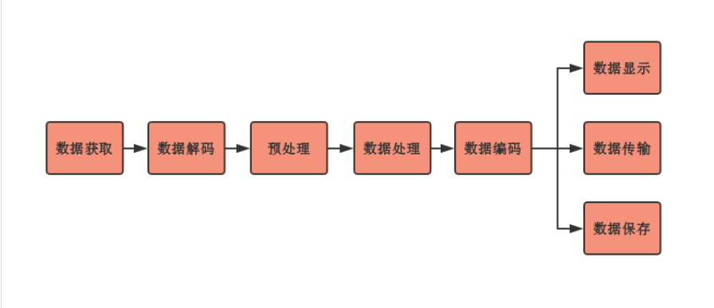

Table of Contents
关键帧提取
# https://stackoverflow.com/questions/42798634/extracting-keyframes-python-opencv import os import cv2 import subprocess filename = '/home/andriy/Downloads/video.mp4' def get_frame_types(video_fn): command = 'ffprobe -v error -show_entries frame=pict_type -of default=noprint_wrappers=1'.split() out = subprocess.check_output(command + [video_fn]).decode() frame_types = out.replace('pict_type=','').split() return zip(range(len(frame_types)), frame_types) def save_i_keyframes(video_fn): frame_types = get_frame_types(video_fn) i_frames = [x[0] for x in frame_types if x[1]=='I'] if i_frames: basename = os.path.splitext(os.path.basename(video_fn))[0] cap = cv2.VideoCapture(video_fn) for frame_no in i_frames: cap.set(cv2.CAP_PROP_POS_FRAMES, frame_no) ret, frame = cap.read() outname = basename+'_i_frame_'+str(frame_no)+'.jpg' cv2.imwrite(outname, frame) print ('Saved: '+outname) cap.release() else: print ('No I-frames in '+video_fn) if __name__ == '__main__': save_i_keyframes(filename)
视频分析应用
